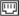

<div class="Asidecontent">
	<div class="Aside_show_btn">
		<p class="AsideBtn_tp"></p>
		<p class="AsideBtn_bt"></p>
	</div>
	
	<ul class="Aside_list">
		<li class="Aside_list_li">
			<a class="list_parent" href="../classhours/classhoursGrade.html">
				<div class="list_icon">
					<!--<span class="bg_1"></span>-->
					
				</div>
				<div class="list_name_right">
					<span>接口管理</span>
				    <div class="triangle"></div>
				</div>
			</a>
			<div class="Aside_list_child">
				<dl>
					<dd><a href='./interfaceInfo.html'>接口信息</a></dd>
					<dd><a href='./interfaceCreact.html'>创建接口</a></dd>
				</dl>
			</div>
		</li>
	</ul>
	
</div>


							